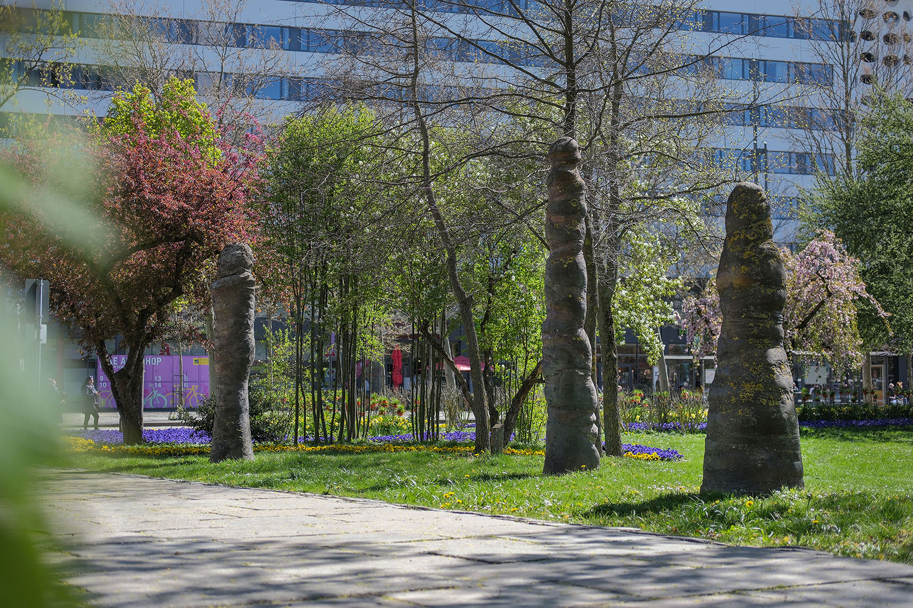
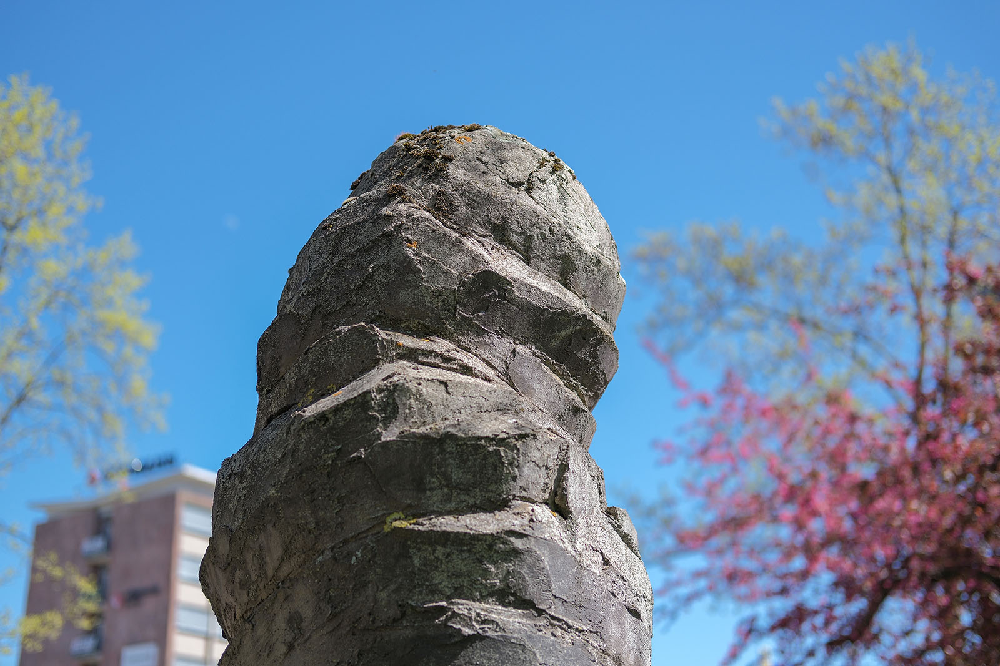
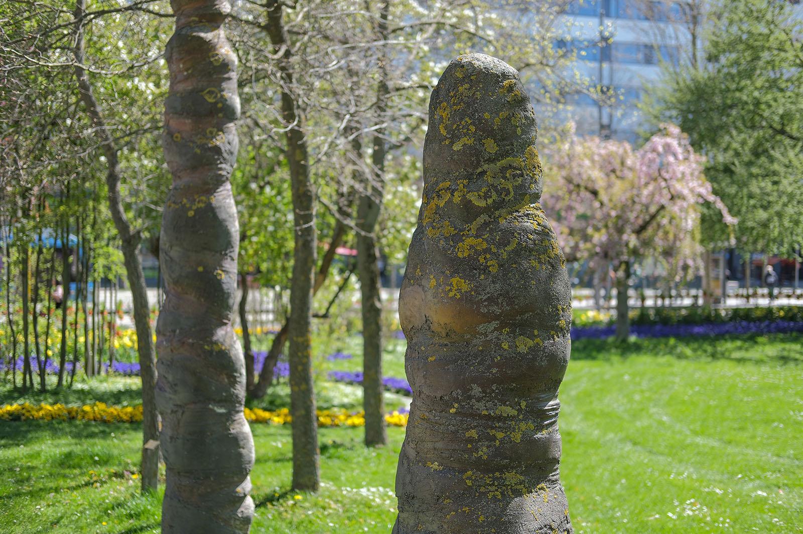
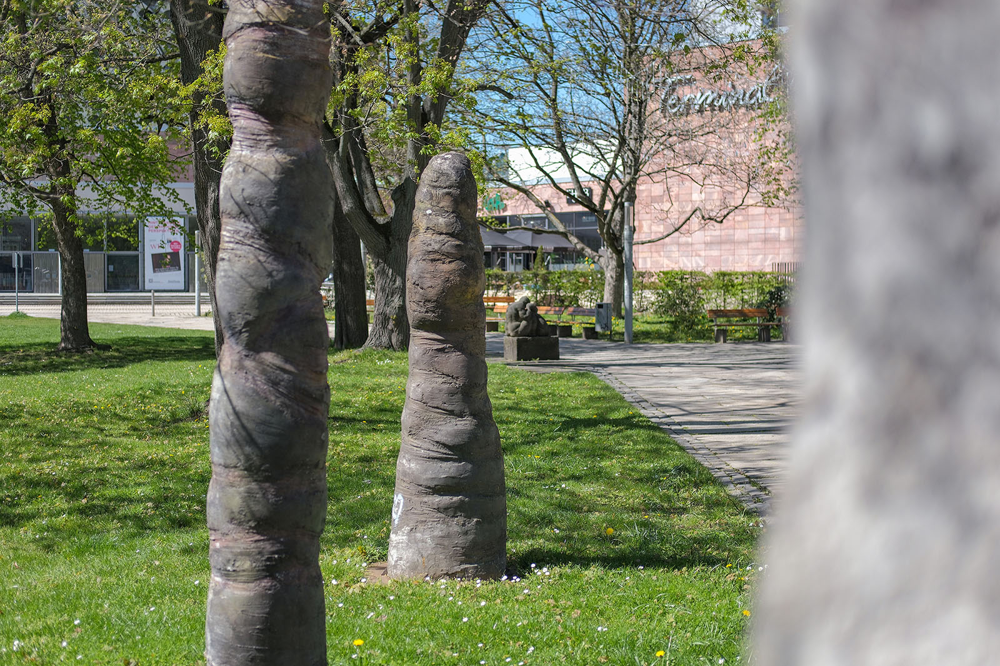
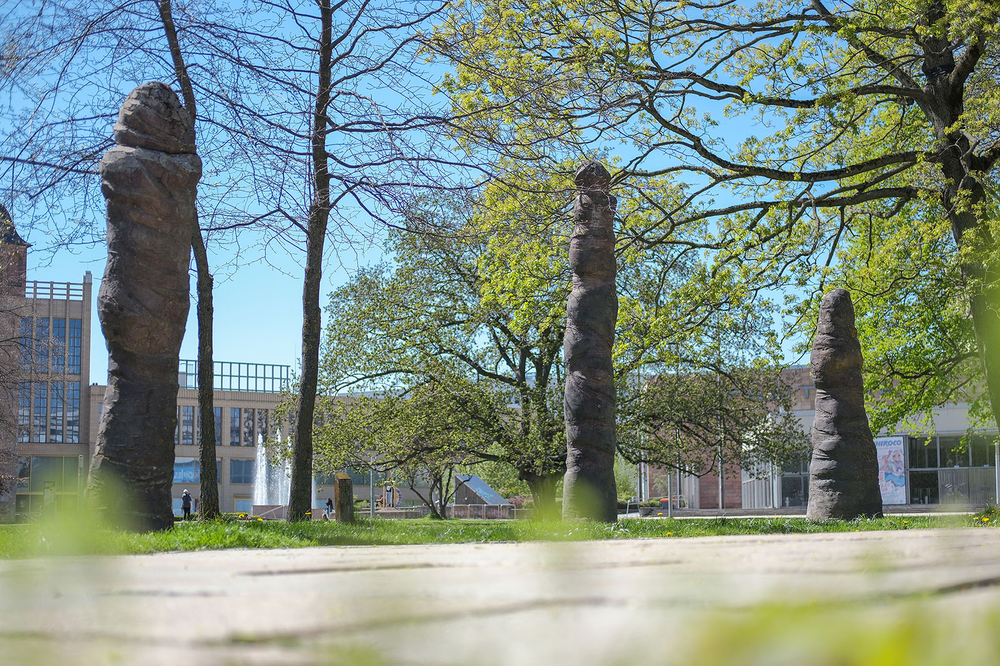

Recherche und Werkbeschreibung: Roman Pilz. Text und Fotografien wechseln sich wie in einem Magazin ab. Ein Klick auf ein Bild öffnet die Großansicht.
Die "Drei Skulpturen – Verwicklungen" entstanden im Rahmen des Kunstprojekts "InSicht", das vom 20. Oktober 2001 bis zum 19. Oktober 2002 im öffentlichen Raum von Chemnitz stattfand. In Kooperation mit vier Kunstvereinen wurden für die Dauer von einem Jahr 25 Kunstwerke im öffentlichen Raum von Chemnitz gezeigt.
Die 27 beteiligten Künstler konnten sowohl den Aufstellungsort als auch die Ausgestaltung des Werkes frei bestimmen. Fast alle Kunstwerke wurden nach Ablauf des Jahres wie geplant wieder abgebaut. Nur einzelne Werke verbleiben durch Engagement von Privatleuten oder der Künstler für länger bzw. bis heute im öffentlichen Raum. Rainer Maria Schuberts 2001 geschaffenes Kunstwerk ist eines dieser verbliebenen Werke.
Der Künstler wählte bewusst den zentralen Ort im Stadthallenpark und somit die Gesellschaft einer Reihe von Kunstwerken, die in den 1970er Jahren von namhaften Künstlern der DDR zur Ausschmückung des Garten- und Parkareals um das multifunktionale Kulturhaus "Stadthalle" aufgestellt wurden. Anlässlich der Eröffnung des Kunstwerks sprach der Künstler von einem in Erfüllung gegangenen Traum, diese zentrale Fläche mit seiner Kunst zu bespielen.
Neben seinen figürlichen Auftragsarbeiten arbeitet Schubert bereits seit den 1980er Jahren verstärkt abstrakt. Die Zeichnung steht bei Schubert am Ausgangspunkt seiner freieren bildhauerischen Arbeiten: Die Formen bleiben minimalistisch – geschwungene Striche und Linien formen die Gestalten. Bei kleineren Arbeiten in Ton, die er in den 1990er Jahren ausführte, fügt er das Material anschließend streifenweise zu einer figürlichen Silhouette zusammen. Ebenfalls in Ton, der später mit farbiger Engobe gebrannt wurde, gestaltet er auch eine Reihe von aufrecht stehenden Figuren, die entfernt an eingewickelte Körper von Menschen erinnern – bei den "Verwicklungen" übersetzt der Künstler diese Vision ins große räumliche Format.

Schubert konstruiert zunächst ein vertikales Gestell aus Edelstahl, das fest auf einer Stahlplatte als Basis montiert ist. Anschließend umhüllt er die Stele mit einem glatten Überbau, auf den er den faserverstärkten Beton aufbringen kann. Er modelliert wie mit Ton und Gips mit der Hand oder mit dem Spachtel. Die mehr oder weniger schlanken Körper der unterschiedlich hohen Figuren sind durch die Gestaltung in unterschiedliche Segmente gegliedert. Es wirkt, als würden die Körper von horizontal umlaufenden, breiten Bändern umwickelt und mehr oder weniger abgeschnürt. So meint man stellenweise, den Umriss eines menschlichen Körpers, Kopfes oder Torsos zu erahnen.
Der Beton wurde vom Künstler mit rostbraunen Farbpigmenten gefärbt – so entsteht der Eindruck eines metallischen Körpers. Die Oberfläche ist stellenweise glatter, meist aber rau und mit ausgehärteten Graten, die vom Spachteln herrühren, gearbeitet. Die reich texturierte Oberfläche, die mit der Zeit auch noch eine von der Witterung beeinflusste Patina gebildet hat, reizt zum Berühren.

Neben der Oberfläche inspirieren die einzelnen Figuren sowie das ganze Ensemble auch zu freieren Assoziationen: In Chemnitz, der Stadt mit dem "Versteinerten Wald", kommen schnell die im Inneren des Kulturhauses "Tietz" aufgestellten, stelenartigen Pflanzenfossilien in den Sinn - Menschen, Gewächse oder Finger können aber ebenso aus dem Unterbewussten des Betrachters aufsteigen.
Wie eingeleitet, ist das Werk Zeugnis eines der erfolgreichsten Kunstprojekte der Stadt nach der deutschen Wiedervereinigung. Es schlägt konzeptionell die Brücke von der Ausstellungsreihe "Plastik im Freien", die zu DDR-Zeiten regelmäßig durchgeführt wurde, und zu jüngeren Ausstellungsformaten, wie den "Gegenwarten | Presences" aus dem Jahr 2020. Die positive Resonanz und der besondere Fokus auf lokale Künstler führten sicher dazu, dass in der bis 2030 gültigen Kulturstrategie der Stadt das Ziel formuliert wurde, das InSicht-Projekt fortzusetzen.


